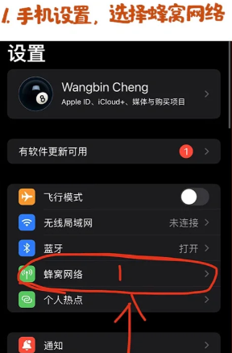
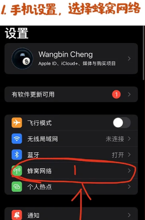
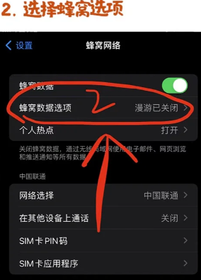
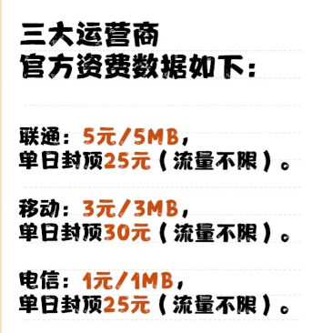
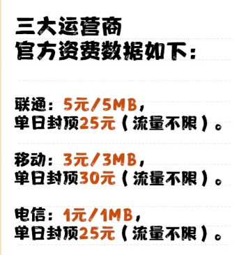
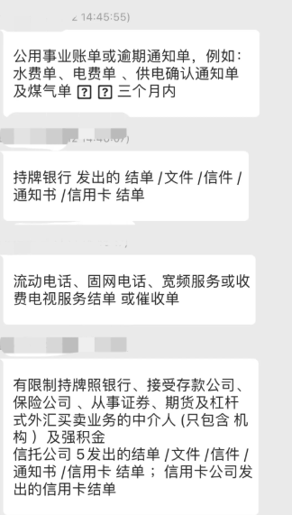
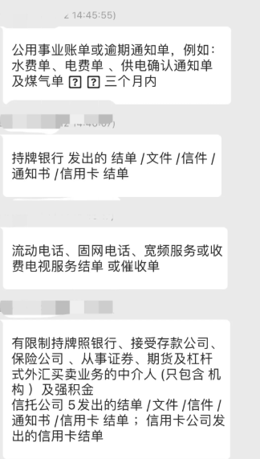

中银香港办卡攻略（资料和注意事项）
中银香港是国人办卡和持有成本相对较低，且使用也比较方便的银行之一。作为中国银行的子公司，相对来说也更加可靠。

办卡材料
-
身份证
-
港澳通行证（有效期 6 个月以上）
-
过关小纸条（过境海关给的小纸条）
-
准备一万港币现金（办理成功后预存）
-
住址证明（可用信用卡带个人地址的账单彩印出来，如果没有可参考使用水电气费缴费单、户口本原件、驾驶证原件、居住证原件等（需个认居住地址精确到门牌号））
-
A股、基金账户、港美股券商账号（办卡用途可以告知是投资用途）
-
提前下载好中银 App：中银香港手机银行 和 BoC Pay（下载地址：https://www.bochk.com/sc/more/ebanking/apps.html）
-
提前开通手机国际漫游（接收短信、流量上网）


关于预约排号
中银香港部分的网点需要先网上预约才能去现场取号。比如：土瓜湾道分行，有一些也反馈可以免预约直接现场排队（旺角分行、太子分行、佐敦道分行、奥海城分行等）。实际情况可能随时会变，有时间的最好先预约，多跑几家。

注意：即使网上预约，到现场也是要排队取号的。
预约可以通过网页或者微信公众号
微信公众号号可以搜索：中银香港微服务，流程如下：


注意事项
-
开户态度要好，保持谦逊
-
服装得体，说话礼貌尊重
-
经理问能不能买点理财啥的，如果不想，就婉转拒绝，说有考虑，详细了解后再买
-
问下卡后会不会进钱，回答会
-
不要现场提换汇，数字货币，接收货款等，就说开户是用于炒股，储蓄和消费的，有时候要出国用
-
开户不得用于非法违规操作
-
不要把聊天记录和开户信息给经理看
-
经理没有提到的问题不要去问太多
-
请提前到现场找好位置不要跑错分行
一挪迈总结
香港银行卡是国人做港美股投资的必备条件之一，又条件的建议提前拿下 1 个。我之前写过文章解释为什么：建议尽早开办港卡/美股券商
有了港卡只有，美港股账户的开户相对来说比较容易了。关于券商的选择，可以点击查看我的对比文章：美股券商如何选？2024最新对比
当然，也欢迎加我微信( innomadstudio )交流，我也会拉你进交流群，和群友们共同交流讨论各种小技巧。
港澳通行证办理方式
-
办理时间 周一至周六 9:00-17:00
-
🔹【办理流程】 1.拍照➡️2.预约取号➡️3.申请表填写信➡️4.缴费➡️5.领证
-
🔸【拍照注意】 会提供深色衣服，所以不用管穿什么，但记得不能带美瞳和首饰🤦♀️，浓妆也不🉑️。
-
🔹【需要材料】 无需预约，身份证必带！我自己省外的户口，所以需要居住证，居住证都忘记更新了，特意先去派出所更新的。
-
🔸【办理费用】 2次签注 （15/次）+拍照 （60） 一共90元💰（好便宜～） -🔹【领取方式】 ↘️省内：7个工作日 ↘️省外：20个自然日 可以用zfb或者gzh通过编号查询进度 带好本人身份证和回执单在机器上1分钟搞定
-
未到期的签注只要机器上刷一下付下费就行
签注和时间 🔥一年一次(💰15） 🔸有效期为一年，不是一年只能去一次 🔸每次逗留不超过7天 🔸去完后可以马上随时续签，续签后可以随时出发 🔥一年两次(签注费💰30） 🔸有效期为一年，这两次签注在一年内有效 🔸每次逗留不超过7天 🔸第一次去完回来后当天或第二天可以马上又出发 🔥三个月一次(💰15） 🔸有效期为3个月 🔸每次逗留不超过7天 🔸当通行证有效期少于一年时，换新证前只能签三个月的 🔥一年多次(💰80） 🔸有效期为一年，可以多次往返(仅限深户)
开通手机国际漫游
 



资费
 

中银和汇丰香港
✅2024-12-16 已验证 中国银行（香港）(太子分行) 汇丰银行（香港）(始创中心) 🚌交通 荃湾线→ 太子→ B1出口→出口就是中银，步行10分钟左右能到汇丰创始中心网点。 ✅2024-12-14 已验证 中国银行（香港）(元朗青山道分行) 汇丰银行（香港）(元朗分行) 🚌交通 从福田口岸出来转B1巴士直达，汇丰大厦2楼，步行5分钟左右到中银。
✅2024-05 已验证 中国银行（香港）(下葵涌分行)（高德搜不到，在Google Map叫下葵涌分行） 汇丰银行（香港）(葵芳分行) 荃湾线→葵芳→ D出口，过马路，对面新都会mall的背面就是汇丰葵芳分行，步行5分钟左右到中银。
尖沙咀：公众号“深港跨境通”可购买大巴单程票，深圳湾-尖沙咀7.30那班（1h），有好吃的，可以玩玩
⭕️⭕️⭕️平均办理时间 ⏰中银香港：60分钟 ⏰汇丰香港：30分钟
 

注册蚂蚁银行
用手机号注册